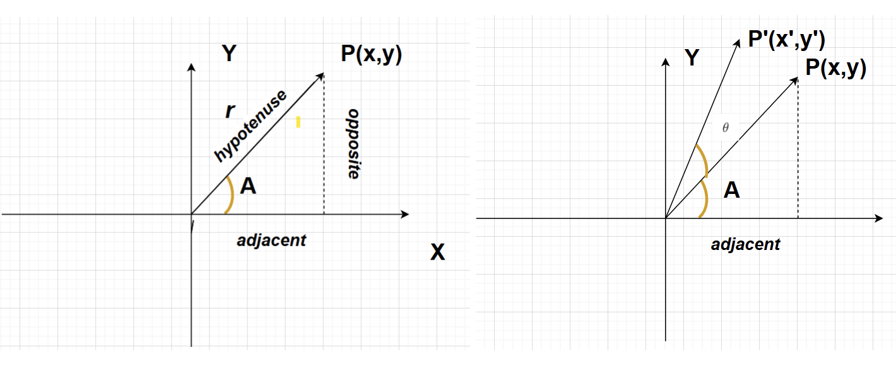
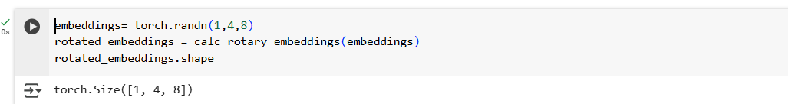

Transformers & Attention · 14 min read
Rotary Positional Embeddings
On this page
Revisiting Positional Embeddings
-
When we were discussing about Positional Embeddings mentioned in foundational paper "Attention is All You Need" , we got to know the importance of positional encodings , also we got to know the two different approaches
Learned&Fixedthough the paper preferred fixed positional embeddings over learned embeddings, the later results and metrics showed that fixed positional embeddings could not accurately process the relation ship between different words or tokens , especially when the sequence whose length is more than sequence encoutered during training. -
One more problem with Fixed Positional Embeddings is as we are adding the positional information which is of the size of the embedding dimension like $x_{m}$ + PE, the way of encoding positional information helps to capture the positional information of the token when we are adding these encodings whose dimension is equal to the dimension of the Embedding , the information generated by Embeddings might be changing the original Embeddings which we would like to avoid , in Machine Learning we generally don't want to tamper with input data we will try to pass the input as is possible except the feature engineering to derive more features we don't want to modify the input data. the positinal information that we are adding in fixed embeddings they don't have any pattern or no parameters involved in training , if the same token appears at different positions in the same sentence or in different sentences across batch models are not able to generalize the information
Inorder to address the above mentioned problems we need an approach that captures the relative information of the tokens which would be helpful for Self Attention process to capture the relation ship between the tokens using the positional information of them, without modifying the Embeddings, hence the birth of Relative Position Embeddings, though techincally we can capture the relative position of the embeddings using NN* matrix , this is computationally expensive. There are also few other issues with pure relative positional embeddings reasearchers came up with Rotary Positional Embeddings
Every data that we process in Machine/Deep Learning is considered a vector , like each feature is a vector & output is a vector , a vector has two components radial & angle components, radial component represents the magnitude of vector , angle represents angle it makes with the plane, rotary embeddings works on this principles of Complex Numbers and Operations on these vectors. Below is the math behind the Rotary Positional Embeddings
Mathematical Foundations of RoPE
Complex Number System: $i^2 = -1$
Euler's Formula: $e^{i\theta} = \cos(\theta) + i\sin(\theta)$
When we multiply Complex Number by i , it results in rotating it by angle 90 degrees, here we represent our Embedding vector in Complex space and multiply it be rotational matrix the anle of the vector changes. Below are the equations of math how this works
-
Step-1:-

cosA= x/r , sinA= y/r
$$ \begin{bmatrix} x\\\ y \end{bmatrix} = \begin{bmatrix} rcosA\\\ rsinA \end{bmatrix} $$
- Step-2:- If we rotate the Vector P by able $θ$ , The vector $P$ becomes $P'$, Vector $P'$ has co-ordinates (x',y')
$$ \begin{bmatrix} x'\\\ y' \end{bmatrix} = \begin{bmatrix} rcos(A+θ)\\\ rsin(A+θ) \end{bmatrix} $$
- Step-3:- With the Formulae mentioned above we can re-write $P'$
$$ \begin{bmatrix} x'\\\ y' \end{bmatrix} = \begin{bmatrix} r (cosA cosθ - sinA sinθ)\\\ r (sinA cosθ + cosA sinθ) \end{bmatrix} $$
$$ \begin{bmatrix} x'\\\ y' \end{bmatrix} = \begin{bmatrix} r cosA cosθ - rsinA sinθ\\\ r sinA cosθ + r cosA sinθ \end{bmatrix} $$
- Step-4:- From Step-1, we know x=rCosA, y=rSinA, if we apply this for $P'$ can be re-written as
$$ \begin{bmatrix} x'\\\ y' \end{bmatrix} = \begin{bmatrix} x cosθ - y sinθ\\\ y cosθ + x sinθ\\ \end{bmatrix} $$
$$ \begin{bmatrix} x'\\\ y' \end{bmatrix} = \begin{bmatrix} \cos\theta & -\sin\theta\\\ \sin\theta & \cos\theta \end{bmatrix} \begin{bmatrix} x\\\ y \end{bmatrix} $$
- Step-5:- From the above we can observe that when we multiply vector (x,y) with Rotation matrix , we can get vector (x',y') which is rotated by angle θ.Hence the matrix below is known as rotation matrix , this is also the populary known as Euler' Formula
Euler's Formula $$e^i\theta = cos\theta + isin\theta$$
$$ R(θ) = \begin{bmatrix} \cos\theta & -\sin\theta \\\ \sin\theta & \cos\theta \end{bmatrix} $$
One importatnt point note from here is that we are rotating the vector, the magnitude of the vector remains the same,we are only shifting the vector in the complex 2D space, this is an important property require for us so that we don't change the original value of the Embeddings.
If we extend this two two vectors P & Q which makes angle $\theta_{1}$ & $\theta_{2}$ with Plane respectively, if we perform dot product(Inner Product) between these two P.Q
$$P = \begin{bmatrix} \cos\theta_{1} & -\sin\theta_{1}\\\ \sin\theta_{1} & \cos\theta_{1} \end{bmatrix} \begin{bmatrix} x_{1} \\\ y_{1} \end{bmatrix} \quad Q = \begin{bmatrix} \cos\theta_{2} & -\sin\theta_{2} \\\ \sin\theta_{2} & \cos\theta_{2} \end{bmatrix} \begin{bmatrix} x_{2} \\ y_{2} \end{bmatrix} $$
Let us re-write P and Q as below
$$ P = \begin{bmatrix} x_{1} \cos\theta_{1} - y_{1} \sin\theta_{1} \\\ x_{1} \sin\theta_{1} + y_{1} \cos\theta_{1} \end{bmatrix} \quad Q = \begin{bmatrix} x_{2} \cos\theta_{2} - y_{2} \sin\theta_{2} \\\ x_{2} \sin\theta_{2} + y_{2} \cos\theta_{2} \end{bmatrix} $$
Dot product between them is $P^T$ .Q
$$ P = \begin{bmatrix} x_{1} \cos\theta_{1} - y_{1} \sin\theta_{1} & x_{1} \sin\theta_{1} + y_{1} \cos\theta_{1} \end{bmatrix} \quad Q = \begin{bmatrix} x_{2} \cos\theta_{2} - y_{2} \sin\theta_{2} \\\ x_{2} \sin\theta_{2} + y_{2} \cos\theta_{2} \end{bmatrix} $$
$$P^T.Q = \begin{bmatrix} (x_{1}cos\theta_{1} -y_{1}sin\theta_{1}) * (x_{2}cos\theta_{2} -y_{2}sin\theta_{2}) + (x_{1}sin\theta_{1} + y_{1}cos\theta_{1}) * (x_{2}sin\theta_{2} + y_{2}cos\theta_{2} \end{bmatrix}) $$
$$P^T.Q = \begin{bmatrix} (x_{1} x_{2} cos\theta_{1} cos\theta_{2} - x_{1} y_{2} cos\theta_{1}sin\theta_{2} - x_{2} y_{1}sin\theta_{1} cos\theta_{2} + y_{1} y_{2} sin\theta_{1} sin\theta_{2}) + (x_{1} x_{2} sin\theta_{1} sin\theta_{2} + x_{1} y_{2} sin\theta_{1} cos \theta_{2} + x_{2} y_{1} cos\theta_{1} sin\theta_{2} + y_{1} y_{2} cos\theta_{1} cos\theta_{2}) \end{bmatrix} $$
$$P^T.Q = \begin{bmatrix} ( x_{1} x_{2} (cos\theta_{1} cos\theta_{2} + sin\theta_{1} sin\theta_{2}) + y_{1} y_{2} (cos\theta_{1} cos\theta_{2} + sin\theta_{1} sin\theta_{2}) + x_{1} y_{2} (sin\theta_{1} cos\theta_{2} - cos\theta_{1}sin\theta_{2}) - x_{2} y_{1} (sin\theta_{1} cos\theta_{2} - cos\theta_{1} sin\theta_{2}) \end{bmatrix} $$
$$P^T.Q = \begin{bmatrix} ( x_{1} x_{2} cos(\theta_{1}-\theta_{2}) + y_{1} y_{2} cos(\theta_{1}-\theta_{2}) + x_{1} y_{2} (sin(\theta_{1}- \theta_{2}) - x_{2} y_{1} (sin(\theta_{1}-\theta_{2}) \end{bmatrix} $$
$$P^T.Q = \begin{bmatrix} ( (x_{1} x_{2} + y_{1} y_{2}) cos(\theta_{1}-\theta_{2}) + (x_{1} y_{2} - x_{2} y_{1}) (sin(\theta_{1}- \theta_{2}) \end{bmatrix} $$
$$P^T.Q = \begin{bmatrix} ( (x_{1} x_{2} + y_{1} y_{2}) cos(\theta_{1}-\theta_{2}) + (x_{2} y_{1} -x_{1} y_{2}) (- sin(\theta_{1}- \theta_{2}) \end{bmatrix} $$
The above can be re-written in terms of Rotation Matrix as below ,from this we can infer when we perform dot product between two vectors the relative position between them is captured which is represented by $\theta_{1}-\theta_{2}$ this property is required when we calculate Selft Attention we perform Dot product between Q(Query) & K(Key) vectors this helps in capturing the relation ship between the relative positions of the tokens
$$ P^T \cdot Q = \begin{bmatrix} x_{1} & y_{1} \end{bmatrix} \begin{bmatrix} \cos(\theta_{1} - \theta_{2}) & -\sin(\theta_{1} - \theta_{2})\\\ \sin(\theta_{1} - \theta_{2}) & \cos(\theta_{1} - \theta_{2}) \end{bmatrix} \begin{bmatrix} x_{2}\\\ y_{2} \end{bmatrix} $$
All of this what we discussed is applicable in 2Dimensional Space, but in practice the LLM have Embedding Dimensions of size 2048 & 3092 etc... the Rotary Embedding paper researchers applied the above principals of rotating the vector by multiplying the Rotation matrix R($\theta$) with the pairs of embeddings
Example with Rotation in 2D Space
For simplicity let us consider the sentence which has 6 tokens , each token has embdding of size 8. As we have the solution to find the relative Embeddings in 2D space, we convert this to 2D by dividing the size of the Embedding dimensions by 2 which is 8/2 = 4 , hence we will convert them to 4 pairs of Embeddings and rotate each pair by certain angle, in our current case of 4 pairs, let us consider below vector
$\bar{x}$ = $\left[ x_{1}, x_{2}, x_{3}, x_{4}, x_{5}, x_{6}, x_{7}, x_{8} \right]$
we have 4 Pairs like below
Pair 1:- $\left[ x_{1}, x_{2}\right]$ \ Pair 2:- $\left[x_{3}, x_{4}\right]$ \ Pair 3:- $\left[x_{5}, x_{6}\right]$ \ Pair 4:- $\left[x_{7}, x_{8}\right]$
Now let us include the position of the token into equation, let us generalize this for any position-m , each pair has its own angle, hence we will have d/2 angles, m will be same for all the pairs of the token, as mentioned earlier if we have 6 tokens when we are applying rotation for all the pairs of the token 1, m would be 1, we will also look at the formulae for $\theta$
$$ RoPE(x_{m}^1 , x_{m}^2) = \begin{bmatrix} \cos(m\theta) & -\sin(m\theta) \\\ \sin(m\theta) & \cos(m\theta) \end{bmatrix} \begin{bmatrix} x_{m}^1 \\\ x_{m}^2 \end{bmatrix} $$
$$ RoPE(x_{m}^1 , x_{m}^2) = \begin{bmatrix} cosm\theta_{1} & -sinm\theta_{1} \\\ sinm\theta_{1} & cosm\theta_{1} \end{bmatrix} \begin{bmatrix} x_{m}^1 \\\ x_{m}^2 \end{bmatrix} \quad RoPE(x_{m}^3 , x_{m}^4) = \begin{bmatrix} cosm\theta_{2} & -sinm\theta_{2} \\\ sinm\theta_{2} & cosm\theta_{2} \end{bmatrix} \begin{bmatrix} x_{m}^3 \\\ x_{m}^4 \end{bmatrix} \quad RoPE(x_{m}^5 , x_{m}^6) = \begin{bmatrix} cosm\theta_{3} & -sinm\theta_{3} \\\ sinm\theta_{3} & cosm\theta_{3} \end{bmatrix} \begin{bmatrix} x_{m}^5 \\\ x_{m}^6 \end{bmatrix} \quad RoPE(x_{m}^7 , x_{m}^8) = \begin{bmatrix} cosm\theta_{4} & -sinm\theta_{4} \\\ sinm\theta_{4} & cosm\theta_{4} \end{bmatrix} \begin{bmatrix} x_{m}^7 \\\ x_{m}^8 \end{bmatrix} $$
The above represents calculating Embeddings for Q (Query Matrix), we will understand more about Query matrices in Self Attention, Self Attention also needs K (Key Matrix) , Dot Product between these two matrices gives us the contextual relation ship between the Query vector & Key Vector which represents different tokens in sequence, for us to multiply we should also derive the same RoPE Embeddings for Key matrices , let us represent the position of token as n in this case and angle as $\theta$
$$ RoPE(x_{n}^1 , x_{n}^2) = \begin{bmatrix} cosn\theta & -sinn\theta \\\ sinn\theta & cosn\theta \end{bmatrix} \begin{bmatrix} x_{n}^1 \\\ x_{n}^2 \end{bmatrix} $$
Similarly the RoPE for Key vectors is also calculated in 4 Pairs as the embeddings size is 8 and we divide them by 2.
$$ RoPE(x_{n}^1 , x_{n}^2) = \begin{bmatrix} cosn\theta_{1} & -sinn\theta_{1} \\\ sinn\theta_{1} & cosn\theta_{1} \end{bmatrix} \begin{bmatrix} x_{n}^1 \\\ x_{n}^2 \end{bmatrix} \quad RoPE(x_{n}^3 , x_{n}^4) = \begin{bmatrix} cosn\theta_{2} & -sinn\theta_{2} \\\ sinn\theta_{2} & cosn\theta_{2} \end{bmatrix} \begin{bmatrix} x_{n}^3 \\\ x_{n}^4 \end{bmatrix} \quad RoPE(x_{n}^5 , x_{n}^6) = \begin{bmatrix} cosn\theta_{3} & -sinn\theta_{3} \\\ sinn\theta_{3} & cosn\theta_{3} \end{bmatrix} \begin{bmatrix} x_{n}^5 \\\ x_{n}^6 \end{bmatrix} \quad RoPE(x_{n}^7 , x_{n}^8) = \begin{bmatrix} cosn\theta_{4} & -sinn\theta_{4} \\\ sinn\theta_{4} & cosn\theta_{4} \end{bmatrix} \begin{bmatrix} x_{n}^7 \\\ x_{n}^8 \end{bmatrix} $$
Query & Key Vectors and their rotations are represented in the Paper as below
From Euler's Formulae :-
$$ e^i\theta = cos\theta + i*sin\theta $$
Also we can derive that
$$ cos\theta + i*sin\theta = \begin{bmatrix} cos\theta & - ysin\theta\\\ cos\theta & sin\theta \end{bmatrix} $$
we can apply this for $R_{m,\theta}$ & $R_{n,\theta}$ to calculate the Attention Scores using $q_{m}$.$k_{n}$
$$q_{m}.k_{n} = (R_{m,\theta}* q ) (R_{n,\theta}*k) = ( q^T R_{m,\theta} R_{n,\theta} k) $$
Earlier we saw multiplication between two vectors which are rotated by $\theta_{1}$ & $\theta_{2}$ results in rotation matrix of angle $\theta_{1}-\theta_{2}$, we can apply the same for our rotation matrix
$$\quad \quad \quad R_{m,\theta} * R_{n,\theta} = R_{m-n,\theta}$$
The below represents the relative positions between Query & Key Vectors (Token Embeddings)
$$ Attention Score = q^T \quad R_{m}^T R_{n} k_= q^T \begin{bmatrix} cos(m-n)\theta & - sin(m-n)\theta\\\ cos(m-n)\theta & sin(m-n)\theta \end{bmatrix} \quad k $$
Rotation in Higher Dimension
Rotation for Higher Dimensions is represented in Blocks of 2Dimensional pairs
The above representation is sparse in nature as only 2 dimensions are active at a given point of time , the paper recommends computationally efficient rotatory matrix multiplication using below representation
Paper also mentioned the formulae for calculating theta based on each index pair of embedding dimension , where i represents the index of the pair, while calculating the angle the position of the token and index of the pair both play a role in determining the angle
$\theta_{i} = 10000^{\frac{2(i-1)}{d}}$
Pytorch Implementation
For step by step explanation please refer to colab notebook
Below image illustrate the shape of the tensor passed as input and the output after applying roatry embeddings

import torch
def determine_rotation_theta(max_seqlen, d_model):
""" This method takes Sequence Length , Dimensions of Embeddings to calculate the angle for
each position in the sequence
"""
theta = 1/torch.pow(10000,torch.arange(0,d_model,2)/d_model)
positions = torch.arange(0,max_seqlen)
position_theta = positions.unsqueeze(1) * theta.unsqueeze(0)
position_theta = torch.stack((position_theta.cos(),position_theta.sin()),dim=2).flatten(1)
return position_theta
def calc_rotary_embeddings(embeddings):
"""
This method takes embeddings, it can be of any dimenesion but in transformer implementaions this takes
the dimension of (batch,sequence_len,embed_dimension), it rotates the embedding pairs by certain angle
it does not change the magnitude of the dimension, but rotates a vector
"""
batch_size,max_seqlen,d_model= embeddings.shape
rotation_theta = determine_rotation_theta(max_seqlen,d_model)
cos_theta = rotation_theta[...,0::2]
sin_theta = rotation_theta[...,1::2]
embeddings[...,0::2] = embeddings[...,0::2] * cos_theta - embeddings[...,1::2] * sin_theta
embeddings[...,1::2] = embeddings[...,0::2] * sin_theta + embeddings[...,1::2] * cos_theta
return embeddings
References
- https://arxiv.org/abs/2104.09864
- https://towardsdatascience.com/understanding-positional-embeddings-in-transformers-from-absolute-to-rotary-31c082e16b26/
- https://aiexpjourney.substack.com/p/an-in-depth-exploration-of-rotary-position-embedding-rope-ac351a45c794
- https://medium.com/@DataDry/decoding-rotary-positional-embeddings-rope-the-secret-sauce-for-smarter-transformers-193cbc01e4ed